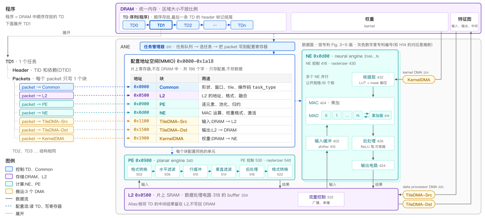
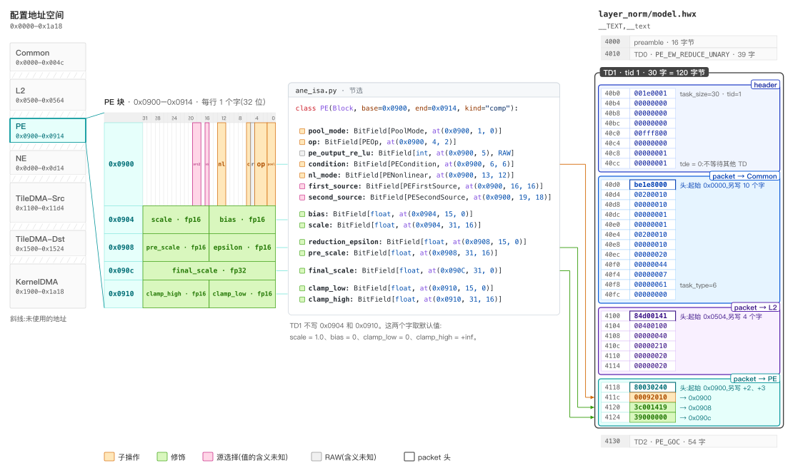
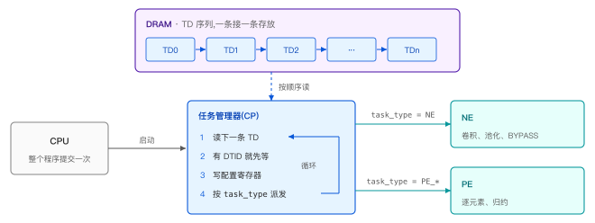
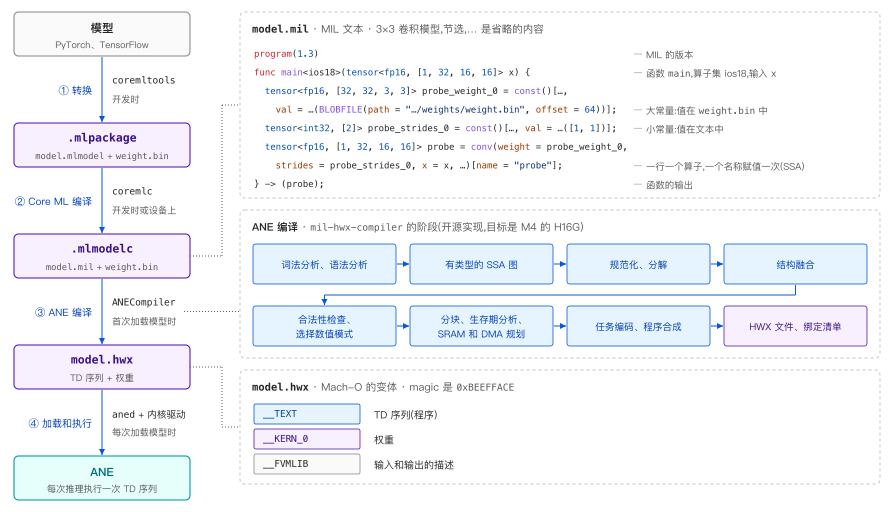

探索 Apple ANE: 硬件架构与指令集
Apple 神经引擎(Apple Neural Engine,ANE)是 Apple 芯片中的神经网络加速器,2017 年随 A11 首次出现。应用通过 Core ML 使用 ANE。本文使用 M2 Pro,它的 ANE 代号是 H14,有 16 个核。Apple 公布的算力是每秒 15.8 万亿次运算,即 15.8 TOPS。A15 的 16 核 ANE 的数字相同,Apple 给出的 fp16 峰值吞吐是 15.8 TFLOPS。ANE 内部有两个计算单元和一块片上 SRAM:NE 做卷积,PE 做逐元素运算、池化和归约。
1. 架构总览

DRAM 存放程序1、权重和特征图。ANE 执行程序的步骤:
- 任务管理器2从 DRAM 读下一条 TD3(图中右上的虚线)。
- 如果 TD 的 header4 有 DTID5,任务管理器等待 tid 等于 DTID 的 TD 完成。
- 任务管理器把每个 packet6 的值写到配置地址空间7(图中左侧的虚线)。一个 packet 写一个块8。TD 没有写的字取默认值,不继承上一条 TD。
- 数据面按配置寄存器的值执行任务(模块和连接来自专利 US12229657B2 的实施例,未实测):
- 任务管理器读下一条 TD,直到最后一条。最后一条 TD 的 header 有结尾标记。
专利中 NE 和 PE 的内部结构:
| 单元 | 数据经过的模块 |
|---|---|
| NE | 输入缓冲 → MAC(多个 MAD 和一个累加器)→ 后处理 → 输出电路。核提取把 KernelDMA 送来的权重解压,送进 MAD |
| PE | 格式转换 → 水平滤波 → 行缓冲 → 垂直滤波 → 后处理 → 格式转换 |
2. 指令集
ANE 是寄存器配置型(CSR-configured)加速器:软件写配置寄存器,硬件按配置执行一个任务。NVDLA 和 Arm Ethos-U 属于同一类。NVDLA 把一次配置和执行称为 hw-layer,Ethos-U 把这种程序称为命令流(command stream)。
Apple 没有公开 ANE 的指令格式。GitHub 上的项目给出了 TD 和配置寄存器的定义:eiln/ane、tinygrad、coreml_to_ane_hwx、mil-hwx-compiler。本文把这些定义汇总成一个文件 ane_isa.py。
本文把一条 TD 称为一条指令,把配置寄存器的格式称为指令集。一条 TD 是一组写操作,每个写操作把一个值写到一个配置寄存器地址。写完后,硬件按 Common.task_type 启动一个任务。操作码是寄存器字段 Common.task_type,TD 的 header 中没有操作码。

ane_isa.py 中 PE 块的声明。右边是 .hwx 中的 TD,一行是一个地址的字。ane_isa.py 用 4 种记录描述指令集。每个事实声明一次,编码器、解码器和反汇编器从记录生成,做法和 LLVM TableGen 相同。
| 记录 | 描述的对象 | 例子 |
|---|---|---|
BitField |
一个字段:值的类型,和位置 at(地址, 高位, 低位) |
op: BitField[PEOp, at(0x0900, 4, 2)] |
Block |
一个块:地址范围,和块中的 BitField |
class PE(Block, base=0x0900, end=0x0914) |
Op |
一种 task_type,和它的子操作字段 |
PEBinary(op=PEOp.ADD) |
TD |
一条 TD:header 和 packet 序列 | TD.build({...}, tid=1) |
值的类型有 3 种:IntEnum、float(16 位字段是 fp16,32 位字段是 fp32)、int。RAW 标记位置已确定、语义未知的字段。260 个字段中,31 个的语义已验证。
用这些记录构造和解码一条 TD:
td = TD.build({**PEBinary(op=PEOp.ADD), Common.win: 16, Common.hin: 32}, tid=1)
raw = td.to_bytes() # 52 字节
assert TD.from_bytes(raw).to_bytes() == raw # 解码后再编码, 字节相同3. 运行时

CPU 把整个程序提交给 ANE 一次。任务管理器对每条 TD 执行 4 步,直到最后一条 TD:
- 按顺序从 DRAM 读一条 TD。
- 如果 TD 有 DTID,等待 tid 等于 DTID 的 TD 完成。
- 写配置寄存器。
- 按
task_type把任务交给 NE 或 PE。
for td in program: # 按 .hwx 中的顺序
if td.dtid is not None: # header 的第 9 个字, 少数 TD 有
wait(td.dtid) # 等待 tid == DTID 的 TD 完成
regs = defaults() # TD 不写的字取默认值
for addr, value in td.writes:
regs[addr] = value
dispatch(regs) # task_type 是 NE: 交给 NE; 其他: 交给 PE
if td.is_last: # header 的 log_events 有结尾标记
breakwait 和 dispatch 是从 TD 格式推断的,未在硬件上验证。
TD 的存放。 TD 在 .hwx 中连续存放,16 字节对齐。TD 没有跳转,也没有指向下一条 TD 的指针。本机的 70 个 .hwx 中,第一条 TD 的 log_events 都是 0x8,最后一条都是 0x22。推断 0x22 是结尾标记。
DTID。 Apple 自带的 H14S 模型有 2534 条 TD,其中 199 条有 DTID。这 199 条都是 NE 任务,其中 103 条等待的是上一条 TD。例子:
tid task_type DTID
69 NE BYPASS
70 NE CONV
71 PE_EW_UNARY
72 NE CONV 71 # 等待 TD71 完成
73 NE BYPASSTD72 等待它的上一条 TD71。如果硬件串行执行 TD,这个等待没有作用。推断(未在硬件上验证):NE 和 PE 可以同时工作,没有 DTID 的 TD 不等待前面的 TD 完成。
提交开销。 本机实测:模型有一条 TD 时,一次推理最少需要 0.10–0.12 ms。编译器把整个模型的 TD 放在同一个 .hwx 中,CPU 提交一次,TD 之间的切换由任务管理器完成。H14S 的 2534 条 TD 在同一个 .hwx 中。如果逐条提交,开销约为 2534 × 0.1 ms ≈ 250 ms。
4. 编译器
4.1 一条 TD 的能力
ANE 有两个计算单元:NE 做卷积,PE 做逐元素运算。task_type 选择计算单元:NE 选 NE,6 种 PE_* 选 PE。用 PyTorch 表示:
import torch.nn.functional as F
# NE: 卷积 (task_type = NE)
# NE.op 还可以选 POOL、EW_MUL、EW_SQUARE 和 BYPASS(不计算, 只搬数据)
def ne_conv(x, w, stride=1):
# x: [cin, hin, win] cin ≤ 65536, hin ≤ 16384, win ≤ 16384
# w: [cout, cin, kh, kw] cout ≤ 65536, kh ≤ 32, kw ≤ 32
# 类型 uint8 / int8 / fp16
# stride: 1 或 2
return F.conv2d(x, w, stride=stride)
# PE: 逐元素运算, 可以再接一个归约 (task_type = PE_*)
def pe(a, b, op, reduce=None):
y = op(a, b) # add / mul / max / min
if reduce is not None:
y = reduce(y) # sum / avg / max / min
return y张量按 [通道, 高, 宽] 存放,宽这一维在内存中连续。ne_conv 注释中的参数上限来自编译器 setter 的范围检查。
4.2 一个矩阵乘
NE 没有矩阵乘。编译器用 1×1 卷积计算 C = A @ B(A 是 M × K,B 是 K × N):
| 矩阵乘 | 1×1 卷积 |
|---|---|
| K | 输入通道 |
| M | 宽 |
| N | 输出通道 |
| B | 权重 |
测试模型是用 coremltools 写的 C = A @ B:M = 256,K = N = 2048,fp16,B 是常量。在本机编译,用 ane_isa.py 解码,得到 9 条 TD:
| 标准写法 | ANE 上的写法(9 条 TD) |
|---|---|
|
|
- 形状来自 TD 的
cin、hin、win、cout。 - 存储位置来自 TD 写了哪些 DMA 块。TD1–TD8 都不写 TileDMA-Src,输入
At在 L2 中。 permute对应Common.output_transpose(编译器中的名称)。“转置”这个语义是从前后 TD 的形状推断的。- 以上来自编译结果,没有在硬件上执行。
4.3 两个连续的矩阵乘
D = (A @ B) @ W,W 是 2048 × 2048 的常量。编译得到 17 条 TD:
| 标准写法 | ANE 上的写法(17 条 TD) |
|---|---|
|
|
和 4.2 的区别:
- H 不写回 DRAM。TD1–TD8 都不写 TileDMA-Dst,8 块 H 存放在 L2 的 0xe0000、0xc0000 … 0x0,每块 128 KiB。TD9–TD16 都不写 TileDMA-Src,从 L2 读 H。
- H 不转置。
ne_conv的输出Ht是[N, 1, M],和下一个ne_conv的输入格式相同。TD1–TD8 的output_transpose是 0。
L2 中的张量被多条 TD 复用:At 被 TD1–TD8 复用,A 从 DRAM 读一次;H 被 TD9–TD16 复用。每条 CONV 更换一块权重。
4.4 编译整个模型
编译器对整个模型做下面的工作,输出是 TD 序列:
| 工作 | 内容 |
|---|---|
| 算子映射 | 把每个算子分解成 NE / PE 任务。例子:矩阵乘 → 1×1 CONV(4.2) |
| 布局选择 | 决定每个张量怎样放进 [通道, 高, 宽],减少 BYPASS 转置。H14S 有 699 条 BYPASS、575 条 CONV |
| 分块 | 按 L2 和权重缓冲的大小分块。例子:4.2 中 B 分成 8 块 |
| 融合 | 把相邻算子的中间结果保留在 L2 中,不写回 DRAM。例子:4.3 中的 H |
| L2 分配 | 给保留在 L2 中的张量分配地址。例子:H 的 8 块存放在 0xe0000 … 0x0 |
| 调度与同步 | 决定 TD 的顺序,给需要等待的 TD 加 DTID |
| 常量处理 | 在编译时把权重排成卷积需要的格式,选择 fp16 / int8 |
5. 使用流程
ANE 通过 Core ML 使用:开发者提供 Core ML 模型,系统把模型编译成 TD 序列并执行。

model.mil 的内容、ANE 编译的阶段、model.hwx 的段。5.1 文件格式
.mlpackage 中的 model.mlmodel 是 protobuf,内容是 MIL 程序。MIL(Model Intermediate Language)是 coremltools 的中间表示。coremlc 把它输出成文本格式的 model.mil。图中的 model.mil 是本机 coremlc 对一个 3×3 卷积模型的输出。
weight.bin 存放常量的值。文件头是 64 字节,每个常量有 64 字节的常量头(magic 是 0xDEADBEEF)。MIL 中 BLOBFILE 的 offset 是常量头的位置。
5.2 ANE 编译
第 ③ 步的输入是 model.mil 和 weight.bin,输出是 model.hwx。4.4 的工作在这一步完成。Apple 的编译器是私有框架 ANECompiler,没有公开文档。图中的阶段来自 mil-hwx-compiler 的 README。它是第 ③ 步的开源实现,不调用 ANECompiler。
和 4.4 的对应关系:分解对应算子映射,结构融合对应融合,SRAM 规划对应 L2 分配。mil-hwx-compiler 的结果来自 M4,本文没有在 H14 上运行它。
4.2 和 4.3 的 TD 来自第 ① 步到第 ③ 步的输出。
5.3 加载和执行
第 ④ 步由系统完成:
- Core ML 请求
aned加载模型。aned是 ANE 的系统守护进程。 aned在缓存(/Library/Caches/com.apple.aned)中查找model.hwx。如果缓存中没有,aned请求编译服务执行第 ③ 步,把model.hwx存放在缓存中。aned把model.hwx交给内核驱动,内核驱动创建程序。- 每次推理时,应用用 IOSurface 提供输入和输出,CPU 把整个程序提交一次(见第 3 节)。
模型中 ANE 不支持的算子由 Core ML 放到 CPU 或 GPU 上执行。
步骤 1 到 3 来自 aned 的静态分析和 mil-hwx-compiler 的文档,没有动态跟踪。
参考
Footnotes
程序:DRAM 中顺序存放的 TD。↩︎
任务管理器:读 TD、写配置寄存器的单元。名称来自专利。↩︎
TD(Task Descriptor,任务描述符):ANE 的一条指令。一条 TD 配置一个任务:一层,或一层的一块。↩︎
header:TD 的头部。内容是 TD 的编号(tid)和依赖(DTID)。↩︎
DTID:一个 tid。有 DTID 的 TD 依赖这个 tid 对应的 TD。↩︎
packet:TD 中的一组寄存器写操作。↩︎
配置地址空间:ANE 片上的配置寄存器,地址是 0x0000–0x1a18,共 186 个字。一个字是 32 位。↩︎
块:配置地址空间中的一段,配置一个硬件单元。共 7 个块:Common、L2、PE、NE、TileDMA-Src、TileDMA-Dst、KernelDMA。↩︎
TileDMA-Src、TileDMA-Dst:搬运特征图的单元。Src 的方向是 DRAM → L2,Dst 的方向是 L2 → DRAM。↩︎
L2:片上 SRAM,存放 NE 和 PE 的输入和结果。↩︎
KernelDMA:搬运权重(kernel)的单元,方向是 DRAM → NE。↩︎
NE(Neural Engine):计算单元,做卷积。↩︎
PE(Planar Engine):计算单元,做逐元素运算、池化、归约。↩︎